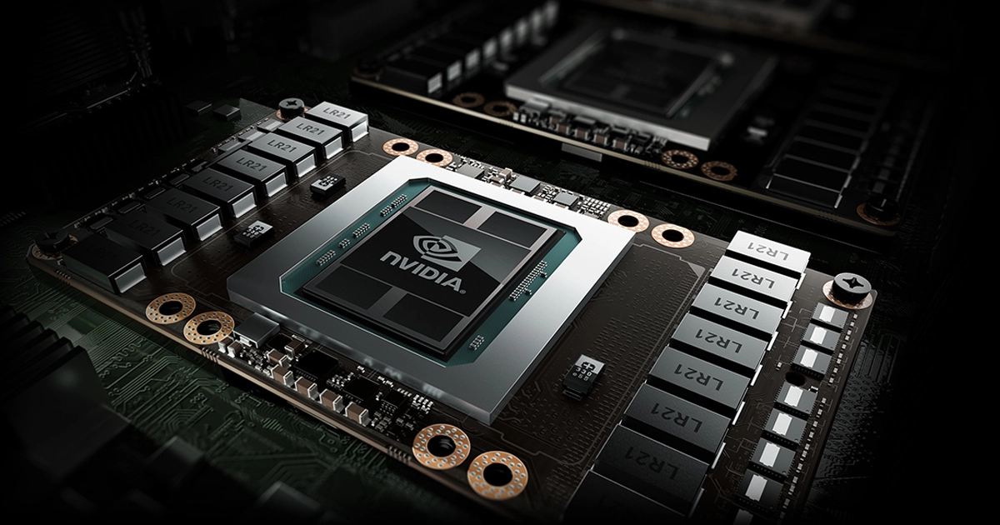
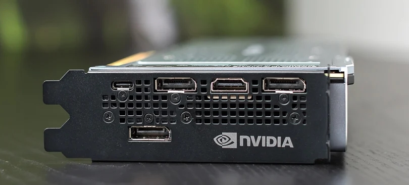

Grafické karty
Grafická karta je v informatice součást počítače , jejímž
úkolem je vytvářet grafický výstup na
monitoru. Hlavní součástí grafické karty je grafický procesor
(GPU), který slouží pro rychlé a
efektivní změny obsahu grafické paměti (viz framebuffer) a tím i změny obrazu viditelného na
monitoru. Grafická karta může být integrovaná (tj. používá operační
paměť počítače, je výrobci
prezentována jako levnější) nebo
Stavba GPU
- GPU-grafický procesor. Obsahuje řadič paměti, unifikované shadery, TMU
jednotky, ROP
jednotky a další. Zpracovává 3D geometrii na 2D obraz, zobrazitelný na zobrazovacím
zařízení.
- Unifikované shadery – moderní náhrada za pixelové jednotky. Jsou programovatelné a díky tomu nemusí počítat pouze zobrazovaná data, ale i výpočty pro vědu a další
- Řadič pamětí – stará se o komunikaci mezi grafickou pamětí a GPU. NVIDIA i AMD podporují až GDDR6.
- TMU jednotky (Texture mapping unit) – mapuje textury na objekty
- ROP jednotky (Render Output unit) – zabezpečuje výstup dat z grafické karty.
- Paměť – zde jsou ukládány informace potřebné pro činnost GPU.
- DDR, DDR2, DDR3, GDDR2, GDDR3, GDDR4, GDDR5, GDDR6
- Propustnost je cca 256bitová sběrnice, ale tato hodnota se liší model od modelu.
- Firmware (=BIOS) – základní programové vybavení grafické karty, které je na vlastním paměťovém čipu. Jsou v něm uloženy informace o modelu grafické karty, GPU, taktovací frekvenci GPU a grafické paměti, napětí GPU a další informace.

Historie
První grafická karta byla vyvinuta firmou IBM pro IBM PC v roce 1981. Jednalo se o MDA (Monochrome Display Adapter), který uměl pracovat pouze v textovém režimu. Původní 3D akcelerátor byl vyráběn na desce, která byla spojena s normální grafickou kartou. Jedním z největších představitelů grafických karet byla karta Hercules Graphics Adapter (HGC). Ta s sebou přinesla i další možnosti v rozlišení, kdy se v jednobarevných obrázcích hodnota rozlišení zvedla z doposud maximálních 80 × 25 znaků na vysoce kvalitních 720 × 348 pixelů.
V roce 2012 AMD vydalo grafiky s jádrem GCN (Graphics Core Next) v sérii HD7000. Nejvyšší model z této série, HD7790 ale používal už jádro GCN2. HD7970 je dodnes známá jako velmi dobrá grafika i po téměř deseti letech. Mezi lety 2013 až 2016 Nvidia má lepší výkon než AMD u high-end grafik. V roce 2017 ale vychází RX580 - tato grafická karta má v dnešní době skvělý poměr cena-výkon. Tato karta se (spolu s procesory AMD Ryzen) symbolem návratu AMD V roce 2016 vychází GeForce série 10 "Pascal" - GTX 1060 z této série je dodnes jednou z nejvíce používaných grafik. Nvidia si v roce 2021 stále drží high-end segment se svojí řadou 30 "Ampere" , ale AMD začíná opět konkurovat s RDNA2. Bohužel, i když tyto grafické karty mají velmi lákavou doporučenou cenu, tak díky globálnímu nedostatku polovodičových komponentů a zvýšené ceně kryptoměn se prodávají za 150-200% své doporučené ceny Nvidia značí vyšší modely stejného typu koncovkou "Ti" za číselným označením, AMD používá koncovku "XT"
Výstupy

- Analogové
- VGA – analogový grafický výstup (používán starými monitory CRT a kompatibilními zařízeními)
- Digitální
- DVI – digitální grafický výstup (používaný většinou LCD panelů, projektory a novějšími zobrazovacími zařízeními).
- HDMI – výstup na zobrazovací zařízení (nejčastěji televizor) s vysokým rozlišením.
- DisplayPort – digitální grafický výstup ve vysokém nekomprimovaném rozlišení. S konektory DVI ani HDMI není kompatibilní.
Typy
Nvidia
Řady: MX, GT, GTX, RTX
Amd
Řady:RX,HD, Vega, R,